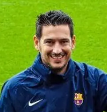

Discover the Magic of Barça
Latest News

Upcoming Matches
Our Players
| Photo | Name | Position | Country | Date of birth | Joined | Jersey Number |
|---|---|---|---|---|---|---|
 |
Marc-André ter Stegen | Goalkeeper | Germany | 30/04/1992 | 01/07/2014 | 1 |
 |
Iñaki Peña | Goalkeeper | Spain | 02/03/1999 | 01/07/2018 | 26 |
 |
Ronald Araújo | Defender | Uruguay | 07/03/1999 | 01/07/2018 | 4 |
 |
Andreas Christensen | Defender | Denmark | 10/04/1996 | 04/07/2022 | 15 |
 |
Marcos Alonso | Defender | Spain | 28/12/1990 | 01/09/2022 | 17 |
 |
Jordi Alba | Defender | Spain | 21/03/1989 | 28/06/2012 | 18 |
 |
Jules Kounde | Defender | France | 12/11/1998 | 28/07/2022 | 23 |
 |
Eric García | Defender | Spain | 09/01/2001 | 01/07/2021 | 24 |
 |
Sergio Busquets | Midfielder | Spain | 16/07/1988 | 01/07/2008 | 5 |
 |
Gavi | Midfielder | Spain | 11/09/2004 | 01/07/2021 | 6 |
 |
Pedri | Midfielder | Spain | 25/11/2002 | 01/07/2019 | 16 |
 |
Franck Kessié | Midfielder | Ivory Coast | 19/12/1996 | 04/07/2022 | 19 |
 |
Sergi Roberto | Midfielder | Spain | 07/02/1992 | 01/07/2013 | 20 |
 |
Frenkie de Jong | Midfielder | Netherlands | 12/05/1997 | 01/07/2019 | 21 |
 |
Ousmane Dembélé | Forward | France | 15/05/1997 | 25/08/2017 | 11 |
 |
Robert Lewandowski | Forward | Poland | 21/08/1988 | 19/07/2022 | 9 |
 |
Ansu Fati | Forward | Spain | 31/10/2002 | 01/07/2019 | 22 |
 |
Ferran Torres | Midfielder | Spain | 29/02/2000 | 01/07/2020 | 21 |
 |
Raphinha | Forward | Brazil | 14/12/1996 | 13/07/2022 | 22 |
| Arnau Tenas | Goalkeeper | Spain | 30/05/2001 | 18/03/2019 | 36 | |
 |
Alejandro Balde | Defender | Spain | 18/10/2003 | 14/09/2021 | 28 |
| Marc Casadó | Midfielder | Spain | 14/09/2003 | 12/07/2022 | 29 | |
| Pablo Torre | Midfielder | Spain | 03/04/2003 | 04/03/2022 | 32 | |
| Ángel Alarcón | Midfielder | Spain | 15/04/2004 | 18/01/2023 | 38 | |
 |
Xavier "Xavi" Hernández | Head Coach | Spain | 25/01/1980 | 06/11/2021 | N/A |
 |
Òscar Hernández | Assistant Coach | Spain | 01/01/1980 | 06/11/2021 | N/A |
| Sergio Alegre | Assistant Coach | Spain | 01/01/1985 | 06/11/2021 | N/A | |
| Iván Torres | Fitness Coach | Spain | 01/01/1990 | 06/11/2021 | N/A | |
| José Ramón de la Fuente | Goalkeeping Coach | Spain | 01/01/1975 | 01/07/2012 | N/A | |
| Sergio Garcia | Analyst | Spain | 01/01/1995 | 06/11/2021 | N/A | |
|  | Toni Lobo | Analyst | Spain | 01/01/1980 | 06/11/2021 | N/A |
| David Prats | Analyst | Spain | 01/01/1990 | 06/11/2021 | N/A |
Hall of Fame
| Name | Position | Years at club | Trophies won |
|---|---|---|---|
| László Kubala | Forward | 1950-1961 | 4 La Liga, 2 Copa del Rey |
| Johan Cruyff | Forward/Midfielder | 1973-1978, 1988-1996 | 1 La Liga, 1 Copa del Rey, 1 European Cup, 1 Cup Winners' Cup |
| Ronald Koeman | Defender/Midfielder | 1989-1995 | 4 La Liga, 1 European Cup, 1 Cup Winners' Cup |
| Josep Guardiola | Midfielder | 1990-2001 | 6 La Liga, 1 European Cup, 2 Cup Winners' Cup |
| Carles Puyol | Defender | 1999-2014 | 6 La Liga, 3 Champions League, 2 Copa del Rey |
| Xavi Hernández | Midfielder | 1998-2015 | 8 La Liga, 4 Champions League, 3 Copa del Rey |
| Andrés Iniesta | Midfielder | 2002-2018 | 9 La Liga, 4 Champions League, 6 Copa del Rey |
| Lionel Messi | Forward | 2004-2021 | 10 La Liga, 4 Champions League, 7 Copa del Rey, 7 Ballon d'Or |
| Luis Alberto Suárez | Forward | 2014-2020 | 4 La Liga, 1 Champions League, 1 Copa del Rey |
| Gerard Piqué | Defender | 2008-2022 | 8 La Liga, 3 Champions League, 7 Copa del Rey |
| Víctor Valdés | Goalkeeper | 2002-2014 | 6 La Liga, 3 Champions League, 6 Copa del Rey |
| Daniel "Dani" Alves | Defender | 2008-2016 | 6 La Liga, 3 Champions League, 5 Copa del Rey |
| Samuel Eto'o | Forward | 2004-2009 | 3 La Liga, 2 Champions League, 3 Copa del Rey |
| Deco | Midfielder | 2004-2008 | 2 La Liga, 1 Champions League, 2 Copa del Rey |
| Ronaldinho Gaúcho | Midfielder/Forward | 2003-2008 | 2 La Liga, 1 Champions League, 1 Copa del Rey, 1 Ballon d'Or |
| Rivaldo | Midfielder/Forward | 1997-2002 | 2 La Liga, 1 Champions League, 2 Copa del Rey, 1 Ballon d'Or |
| Ronaldo Nazário | Forward | 1996-1997 | 1 Cup Winners' Cup, 1 Copa del Rey, 1 Ballon d'Or |
| Luis Enrique | Midfielder | 1996-2004 | 2 La Liga, 1 Copa del Rey, 1 Champions League |
| Hristo Stoichkov | Forward | 1990-1995, 1996-1998 | 5 La Liga, 1 Champions League, 1 Copa del Rey, 1 Ballon d'Or |
Tribute to the late great, Diego Armando Maradona.
Subtitles
English:
Soccer is the most beautiful and healthiest sport in the world, let there be no doubt about that. Just because you make a mistake, you don't have to pay for soccer. I made a mistake and I paid. But... the ball does not, the ball does NOT get stained.
Español:
El fútbol es el deporte más lindo y más sano del mundo, eso no le quepa la menor duda a nadie. Porque se equivoque uno, no tiene que pagar el fútbol. Yo me equivoqué y pagué. Pero... la pelota no, la pelota NO se mancha.